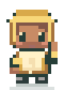

찾는 내용이 없어요. 다른 단어를 입력하거나 검색을 지워 보세요.
빠른 시작
작은 방문자 마을은 티스토리의 오늘 방문자 수를 픽셀 캐릭터로 보여 주는 위젯입니다. 설치에는 블로그 소유자의 스킨 HTML 편집 권한이 필요합니다.
- 설치 화면에서 처음 보여 줄 계절을 선택합니다. 블로그 주소는 관리자 바로가기가 필요할 때만 입력합니다.
- 설치 코드를 만들고 복사합니다. 코드를 만드는 것만으로 블로그가 바뀌지는 않습니다.
- 현재 스킨을 백업한 뒤 관리자에서 꾸미기 → 스킨 편집 → HTML 편집을 엽니다. 마을을 보여 줄 위치에 코드를 넣고 저장합니다.
- 실제 블로그를 새로 열어 마을, 오늘 방문자 수, 모바일 스크롤과 본문 링크를 확인합니다. 스킨에 따라 모바일에도 별도 적용이 필요할 수 있습니다.
위젯 설정
설치 코드의 <visitor-village> 속성으로 바꿉니다. 잘못된 값은
안내하고 마지막 정상 상태를 유지하며, 방문 수를 임의로 줄여 표시하지 않습니다.
| 속성 | 기본값 | 사용 방법 |
|---|---|---|
count |
0 |
0~5,000의 정수입니다. 1,234 같은 올바른 쉼표 표기도 허용합니다.
실제 티스토리에서는 오늘 방문 수 치환자를 사용합니다.
|
season |
christmas |
christmas, spring, summer,
autumn, winter 중 선택합니다.
|
paused |
없음 |
속성이 있으면 멈춥니다. paused="false"도 정지입니다. 다시
움직이게 하려면 속성을 제거하세요.
|
glow |
켜짐 |
glow="false"로 크리스마스 나무의 빛 번짐을 끕니다. 그림 속
전구색은 유지됩니다.
|
refresh-interval |
0 (끄기) |
선택적 확인 주기는 60~3600초의 정수입니다. 60은 1분마다
확인하고 0은 끕니다.
|
기기의 모션 줄이기 설정에서는 자동 이동과 인사, 크리스마스 손님 연출을 멈춥니다. 위젯이 화면 밖에 있거나 탭이 숨겨져도 움직임은 쉬어 갑니다.
방문 수는 어떻게 반영되나요?
오늘 누적 방문 수를 사용하며 현재 동시 접속자 수를 나타내지 않습니다. 캐릭터는 개별 방문자와 연결되지 않으며 이름이나 위치를 표시하지 않습니다. 실제 방문 시각이나 지역을 전달하는 수집 기능도 없습니다.
기본은 페이지를 열 때 받은 숫자
티스토리가 HTML의 방문 수 치환자를 숫자로 바꾸면 그 값을 전달받습니다. 나무 팻말은 처음 확인한 오늘의 수와 같은 날짜의 증가분을 알리며, 한국 날짜가 바뀐 뒤의 차이를 새 방문으로 안내하지 않습니다.
1분 확인은 선택 기능
설치 화면의 고급 설정에서 켜거나 refresh-interval="60"을 추가합니다.
보이는 동안 같은 블로그 출처의 홈페이지 HTML을 읽어 오늘 방문 수를 확인합니다.
홈페이지에도 정상 숫자로 치환된 위젯이 있어야 합니다.
산타와 루돌프, 캐릭터의 인사와 아이콘 말풍선은 장식입니다. 실제 방문 수나 방문자의 행동을 추가로 의미하지 않습니다.
문제 해결
숫자 대신 [##_count_today_##]가 남아 있어요
코드가 티스토리 스킨 HTML에 들어갔는지 확인하세요. 편집 화면의 원본 치환자가 아니라 저장 후 실제 블로그의 HTML에서 숫자로 바뀌는지 확인합니다. 글 본문이나 별도 페이지에서는 같은 방식으로 치환되지 않을 수 있습니다. 임의의 시연 숫자로 덮어쓰지 마세요.
방문 수가 늦게 바뀌거나 자동 확인이 실패해요
자동 확인의 기본값은 끄기이며, 켠 경우에도 티스토리 집계가 늦을 수 있습니다. 블로그 홈페이지에 정상 방문 수의 위젯이 있는지 확인하세요. 홈페이지의 여러 위젯 숫자가 서로 다르면 확인을 중단하고 오류를 표시합니다. 오류 중에는 마지막 정상 마을을 유지합니다.
모바일에서 마을이 안 보여요
자동 모바일 스킨 사용 여부와 실제 모바일 페이지에 설치 코드가 있는지 확인하세요. 블로그의 모바일 본문 링크와 스크롤도 함께 점검합니다.
움직이지 않거나 마을을 불러오지 못해요
paused 속성과 기기의 모션 줄이기 설정을 확인하세요. WebGL을 지원하는
브라우저가 필요합니다. 스크립트가 차단되거나 로드되지 않으면 설치 코드의 모듈 주소가
올바른지 확인합니다.
업데이트가 아직 보이지 않아요
기존 위젯 모듈은 최대 5분간 캐시될 수 있습니다. 잠시 후 새로고침해 보세요. 이전 Vercel 주소를 사용 중이면 현재 설치 화면에서 Pages 주소가 들어간 코드를 다시 만드세요.
계속 해결되지 않으면 브라우저, 선택 계절, 오류 문구와 재현 순서를 정리해 GitHub 이슈 (새 탭)로 알려 주세요. 인증 정보나 스킨 전체 원본은 올리지 마세요.
개발과 자체 호스팅
Node.js 22.12 이상, pnpm 10을 사용합니다. 브라우저 검사에는 Google Chrome이 필요합니다.
pnpm install
pnpm dev
pnpm test
pnpm typecheck
pnpm build
pnpm test:e2e
pnpm build로 만든 dist를 정적 호스팅에 올립니다. 독립
위젯은 dist/widget/visitor-village.js입니다. HTTPS와 JavaScript MIME,
다른 출처의 모듈 로드를 위한 CORS가 필요합니다. 삽입 코드는 직접 호스팅한 모듈 URL로
바꿔 주세요.
속성과 이벤트는 공개 API 설계 (새 탭)에서, 테스트와 배포 상세는 배포 문서 (새 탭)에서 확인할 수 있습니다. main에 병합하면 GitHub Actions가 검사와 빌드를 수행한 뒤 Cloudflare Pages에 배포합니다. 공개 파일 검증을 통과하면 GitHub 릴리즈와 다운로드 파일을 남깁니다.
제작과 출처
표준 픽셀 아이콘은 Pixelarticons (MIT 라이선스)를 사용합니다.
마을의 캐릭터와 계절 소품, 손 인사와 아이콘 말풍선은 프로젝트의 자체 픽셀 코드로 그립니다. 크리스마스 나무 PNG의 생성 과정과 원본 시안, 그림과 영상별 출처는 저장소에 기록되어 있습니다.
사이트의 한국어와 영어 제목에는 Dalgona.의 Neo둥근모, 본문에는 Kil Hyung-jin과 기여자의 Pretendard를 사용합니다. 두 글꼴은 SIL Open Font License 1.1로 배포합니다. Neo둥근모 라이선스와 Pretendard 라이선스를 확인할 수 있습니다.
소개 영상 음악은 Sascha Ende의 곡을 20초로 편집했습니다. 음원 제작자 (새 탭)와 CC BY 4.0 (새 탭)을 확인할 수 있습니다.